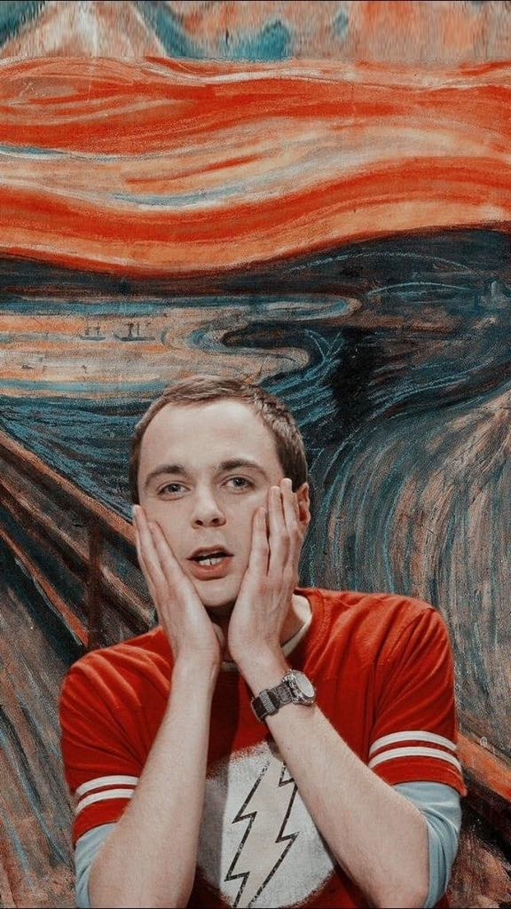
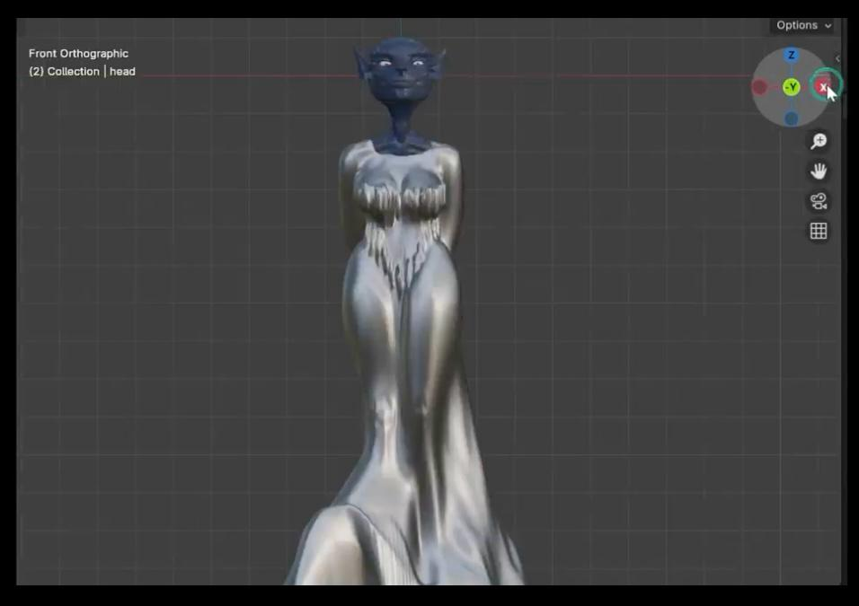
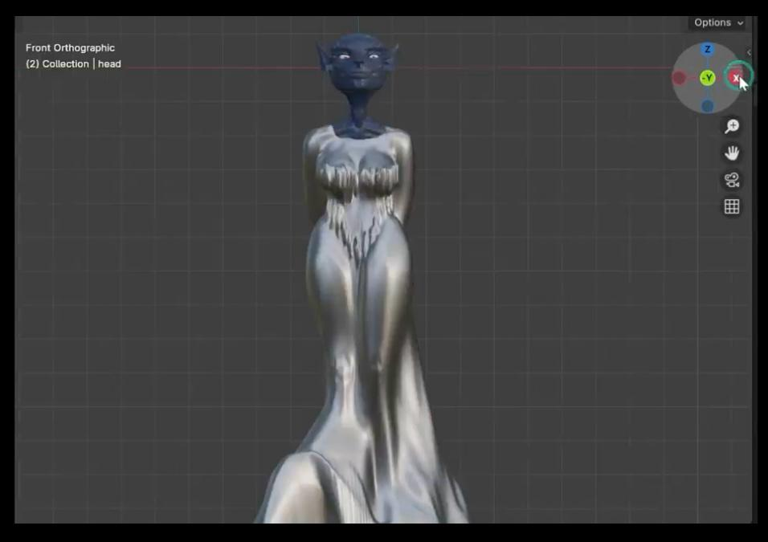
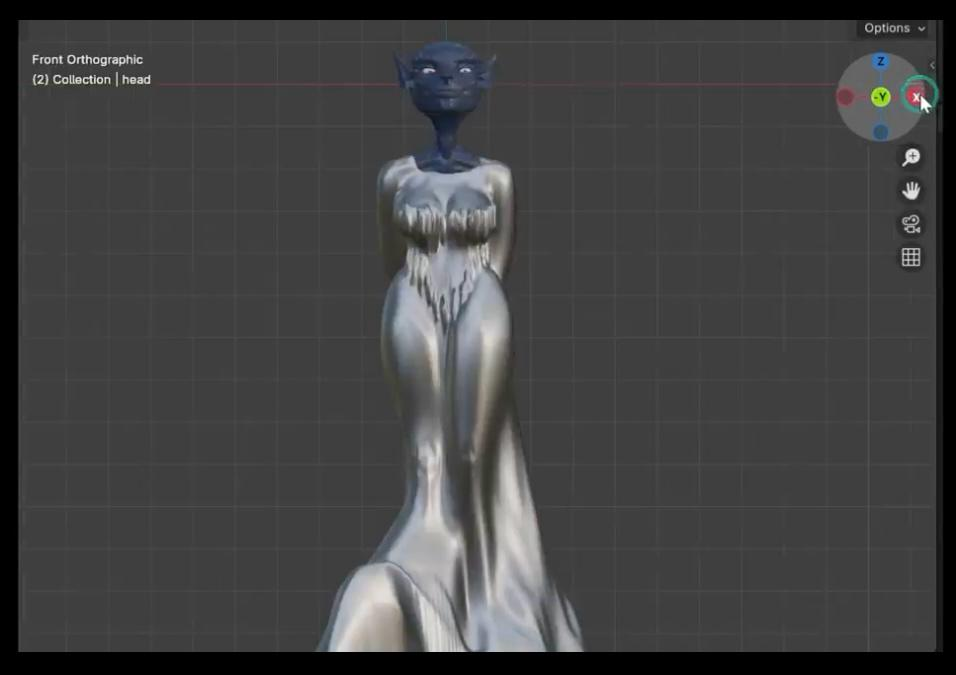

I had the pleasure of working for over 5 years as a supervisor
in parental education. During this time, I was involved in
meaningful and impactful projects, and I like to believe that,
together with my team, we made a positive difference on a
national level, collaborating with schools and educational
institutions all across Romania. Still, I felt I hadn’t quite
found my place. After completing an intensive one-year fullstack
development course, I decided to transition into a field that
felt closer to my heart — partly out of a desire to connect with
people who share my mindset and passions.
I love painting — it helps me stay grounded and expressive in
ways words can't always reach. That’s why I’ve included a small
selection of my artwork in this portfolio: it’s a glimpse into
the way I see and feel the world. Music is my constant companion
— mostly heavy metal (with a funky start to every morning), and
visual creativity flows alongside it. I've always been
fascinated by 3D modeling, especially character design. Over the
past year, I’ve been learning Blender in my spare time, and I’ve
added here a few of my early experiments with digital sculpting
— raw, but made with joy. I’m the proud owner of a hope: that
one day I’ll learn to play the cello beautifully and own a '90
Honda Prelude.
My Creative Projects

Selected Paintings
3D Character Modeling – Blender

Certification
FULLSTACK Developer Course – GoIT Global
Completed: April 7, 2025
Topics covered:
Projects
A selection of my work during the GoIT course and personal
practice
IceCream
Responsive website using Parcel, SCSS, and JavaScript.
Hello, my name is Alexandra. Since 2019, I have been working as
a supervisor in parental education for the HoltIS Association.
All the projects I have been involved in have been carried out
in collaboration with UNICEF. Among these, one of the key
initiatives I contributed to was the establishment of HoltIS
youth clubs in 140 schools nationwide, supporting both middle
and high school students.
I am passionate about painting, music, technology and always
open to new discoveries. I find motivation in challenges that
promote continuous learning and personal growth.
I strongly value fairplay and believe in both offering and
receiving respect. For me, mutual respect, integrity, and
collaboration are essential in creating meaningful connections
and a positive environment.


 
